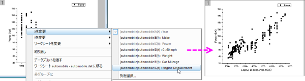
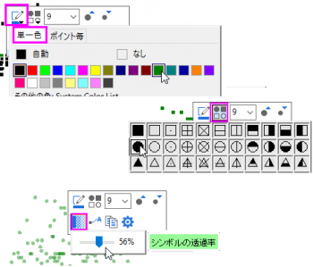
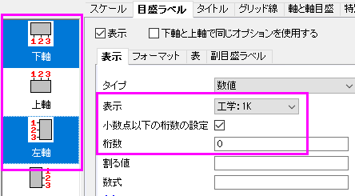
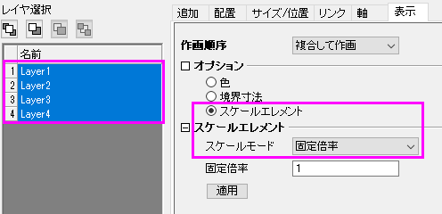
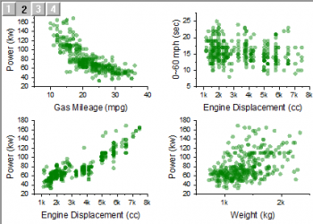
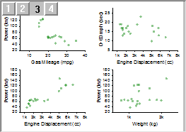

グラフの統合と整列
GSB-Merge-Arrange-graphs
このレッスンでは、グラフの統合で、いくつかのグラフを作成し、統合したり、レイヤを整列したりします。クローンテンプレートとしてグラフを保存し、同様のデータから素早くグラフを作成することも出来ます。
データインポートとグラフ作成
- レッスン３：データ選択 で保存したプロジェクトファイルを開きます。プロジェクトエクスプローラ で、ルートフォルダに新規のフォルダを作成し、グラフの統合 と名前を変えます。空のフォルダをクリックして開きます。
- 標準ツールバーの新規ワークブックボタン
 をクリックし、新しいワークブックを作成します。ヘルプ: フォルダを開く: サンプルフォルダを選択して、サンプルフォルダを開きます。このフォルダ内のStatisticsサブフォルダにあるautomobile.dat ファイルを探します。空のワークシートにファイルをドラッグアンドドロップしてインポートします。
をクリックし、新しいワークブックを作成します。ヘルプ: フォルダを開く: サンプルフォルダを選択して、サンプルフォルダを開きます。このフォルダ内のStatisticsサブフォルダにあるautomobile.dat ファイルを探します。空のワークシートにファイルをドラッグアンドドロップしてインポートします。
- 列Cのヘッダをクリックして列全体を選択します。2Dグラフギャラリーツールバーの散布図ボタン
 をクリックします。
をクリックします。
- 散布図をクリックして選択し、プロット上で右クリックします。コンテキストメニューが開きますので、Xを変更： [automobile]automobile!G(Y):EnginDisplacement を選択してXデータを変更します。グラフを再スケールするかどうか確認するメッセージが開きます。はい を選択し、OK を押します。
 | 確認メッセージには複数の選択肢があります。もし、はい、これからも同様に行い、再度尋ねることは必要ありません。を選択した場合、このダイアログは現れなくなります。ヘルプ：確認メッセージの復活 から、全ての確認メッセージを復活させることが出来ます。
|

- 凡例を選択し、キーボードのDelete キーを押すと削除出来ます。
- このグラフのコピーを作成して、コピーのデータを変更します。まず、ワークシートに戻り、タイトルバーの右上にあるX ボタンを押します。開いたダイアログで 非表示化 を選びます。画面からこのウィンドウが非表示となります。
| 非表示となったウインドウは、プロジェクト・エクスプローラの下パネルに、霞んだアイコンで表示されています。ウィンドウを再度開きたい場合は、アイコンをダブルクリックします。
|
- グラフのタイトルバーを右クリックし、ウィンドウの複製作成 を選択し、コピーを作成します。これを後2回行い、合計4つのグラフウィンドウを表示します。
- ウィンドウ：上下に並べる をクリックすると、4つのグラフが重なることなく、画面に並べられます。
- 先に説明したXを変更またはYを変更 では、次のようにコピーしたグラフのX/Y設定を変更し、必要に応じて再スケールを行います。
- コピー1: Yを [automobile]automobile!D(Y):0^60 mph に変更
- コピー2: Xを [automobile]automobile!E(Y):Weight に変更
- コピー3: Xを [automobile]automobile!F(Y):Gas Mileage に変更
- PowerとWeightの組み合わせのグラフをアクティブにします。いくつか編集します。データプロット上でクリックしてミニツールバーを開き、プロットのプロパティを以下のように変更します。
- シンボルの色をオリーブに変更します。
- シンボルの形状を円形にします。
- シンボルの透過率を56%に設定します。

- Y軸をダブルクリックして、軸ダイアログ を開きます。次のように、軸のプロパティを変更します。
- 目盛ラベル タブをアクティブにします。キーボードの Ctrl キーを押しながら、左のパネルで下 と 左 の両方の軸を選択します。
- 表示 サブタブで、表示を工学：1k に設定します。
- 小数点以下の桁数の設定 にチェックを入れ、桁数 を 0と入力します。OKをクリックして、ダイアログを閉じます。

- このグラフの設定形式を他の3つのグラフにコピーすることが出来ます。軸の外側のようなグラフの空白の部分で右クリックし、コンテキストメニューからフォーマットのコピー：全てのスタイルフォーマット を選択します。
- メインメニューから編集: フォーマットの貼り付け(詳細)を選択します。フォーマットを適用する ダイアログが開きます。下にある適用スコープ のドロップダウンでフォルダ中の全グラフ を選択します。適用 ボタンをクリックし、他のグラフにフォーマットを貼り付けます。閉じる をクリックします。
グラフの統合と整列
- これら4つのグラフを統合します。メインメニューからグラフ操作：グラフウィンドウの統合 を選択します。
- グラフウィンドウの統合 ダイアログが開きます。初期設定のまま、OKボタンをクリックします。４つのレイヤを持つグラフウィンドウが新規に生成されます。
- 統合したグラフにある4つのレイヤを並べ替えることが出来ます。グラフ操作：レイヤ管理 をメインメニューから開きます。レイヤ管理ダイアログが開きます。
- 配置 タブを開き、間隔 （ページ寸法の％） 欄を開きます。次のように設定します。
- 水平の間隔 = 15
- 垂直の間隔 = 15
- 左端余白 = 10
- 右端余白 = 5
- 上部余白 = 5
- 下部余白 = 15
適用ボタンをクリックします。
- 表示タブを開きます。キーボードのCtrl キーを押しながら、左のレイヤ にある4つのレイヤを選択します。オプション 欄にある スケールエレメント にチェックを入れます。スケールモード を 固定倍率 にし、固定倍率 に１と入力します。
| デフォルトで、グラフレイヤをドラッグして大きさを変えたり、統合時にレイヤの大きさが変わった場合、テキストフォントや他のグラフオブジェクトのサイズも調整されます。レイヤサイズが変更したときにフォントサイズや線の太さが調整されないようにするには、スケールモードを固定倍率に設定します。（レイヤレベルの作図の詳細ダイアログのレイヤの大きさタブでも同じ設定が可能です）
|
- 適用ボタンをクリックします。OKをクリックしてダイアログを閉じます。

統合されたグラフは、最終的に下図のようになります。

- プロジェクトエクスプローラの下パネルにあるアイコンをダブルクリックして、automobile ワークブックをアクティブにします。B列を選択して、データフィルタを追加/削除ボタン
 をクリックしてフィルタを追加します。
をクリックしてフィルタを追加します。
- 列ヘッダの左上ににフィルタアイコンが追加されますので、クリックします。コンテキストメニューが現れるので、全て選択 を一度選択して全てのアイテムを非選択にし、次に、Honda にチェックを入れてOKをクリックし、Honda に関連した行だけを表示します。他の行は全て非表示となり、全てのグラフでも変更が更新されます。

クローンテンプレートとスマートプロット
- では、統合したグラフをテンプレートとして保存しましょう。タイトルバーを右クリックして、テンプレートの新規保存 を選択します。テンプレートの保存ダイアログが開きます。
- クローンテンプレートのマーク にチェックが入っていることを確認したら、プロット列の一致条件 を ロングネーム に設定します。テンプレート名 に、MyMergeGraph と入力して、OK をクリックします。テンプレートが保存されたというメッセージがメッセージログに残されます。
| 他のグラフの状態に合わせて、クローンテンプレートに列の場所、列の名称が保存されます。同様の列配置や名称の他のデータから、複雑な構造のグラフを複製することができます。
|
- automobile ワークブックアクティブにします。B列のフィルタを選択し、Honda と Lexus の両方を選択してOKをクリックし、両方のメーカーを表示します。
- ワークブックをアクティブにして、メインメニューから作図：マイテンプレート：MyMergeGraphを選択します。先に統合して作成したグラフと同様の設定、形式で新しいグラフが作成されます。
プロジェクトファイルを保存します。